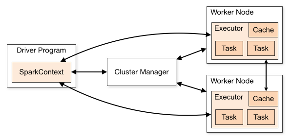

Ch01-Spark 介绍
July 1, 2018
Apache Spark 是用于大规模数据处理的统一分析引擎，基于内存计算，提高了在大数据环境下数据处理的实时性，同时保证了高容错性和高可伸缩性，允许用户将 Spark 部署在大量硬件之上，形成集群。
1. 基本信息 #
| 条目 | 说明 |
|---|---|
| 官网 | https://spark.apache.org/ |
| 下载地址 | https://spark.apache.org/downloads.html |
2. 架构介绍 #
Spark 支持 Standalone、Yarn、Mesos、Kubernetes 等多种部署方案，几种部署方案原理也都一样，只是不同组件角色命名不同，但是核心功能和运行流程都差不多。

- Spark 应用程序启动在自己的 JVM 进程里，即 Driver 进程，启动后调用 SparkContext 初始化执行配置和输入数据。SparkContext 启动 DAGScheduler 构造执行的 DAG 图，切分成最小的执行单位也就是计算任务。
- Driver 向 Cluster Manager 请求计算资源用于 DAG 的分布式计算。Cluster Manager 收到请求以后，将 Driver 的主机地址等信息通知给集群的所有计算节点 Worker。
- Worker 收到信息以后，根据 Driver 的主机地址，跟 Driver 通信并注册，然后根据自己的空闲资源向 Driver 通报自己可以领用的任务数。Driver 根据 DAG 图开始向注册的 Worker 分配任务。
- Worker 收到任务后，启动 Executor 进程开始执行任务。Executor 先检查自己是否有 Driver 的执行代码，如果没有，从 Driver 下载执行代码，通过 Java 反射加载后开始执行。
3. 基本概念 #
| 术语 | 说明 |
|---|---|
| Driver Program | 运行 Application 的 main() 函数并创建 SparkContext |
| Cluster Mananger | 集群资源管理中心，负责分配计算资源，目前支持 Standalone，Apache Mesos，Kubernetes，Hadoop YARN 这四种。 |
| Worker Node | 工作节点，负责完成具体计算 |
| Executor | 是运行在工作节点（Worker Node）上的一个进程，负责运行 Task，并为应用程序存储数据 |
| Task | 运行在 Executor 上的工作单元，是 Executor 中的一个线程 |
| Application | 用户编写的 Spark 应用程序，一个 Application 包含多个 Job |
| Job | 一个 Job 包含多个 RDD 及作用于相应 RDD 上的各种操作 |
| Stage | 作业的基本调度单位，一个作业会分为多组任务，每组任务就是一个 Stage |
| DAG | Directed Acyclic Graph，反映 RDD 之间的依赖关系 |
| RDD | Resilient Distributed Dataset，是分布式内存的一个抽象概念，提供了一种高度受限的共享内存模型 |